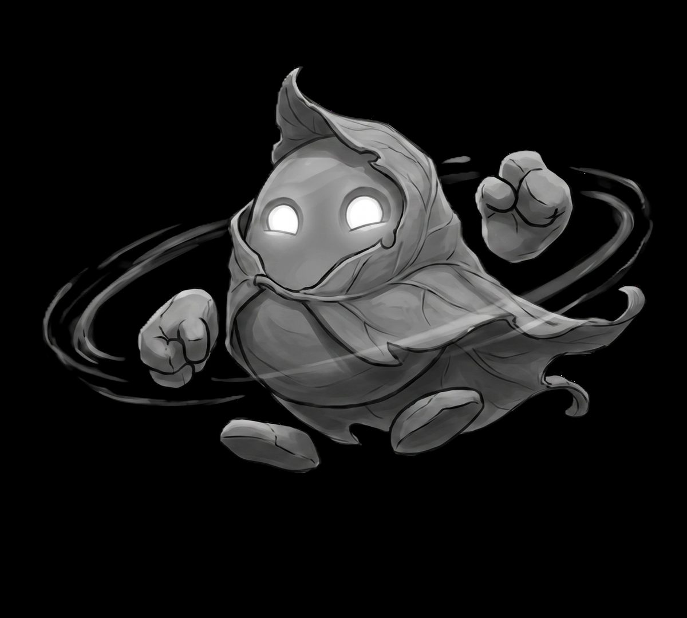

옛날, 아무것도 움직이지 않는 숲이 있었습니다. 나무는 나무의 자리에서, 이끼는 이끼의 자리에서 수백 년씩 자랐습니다. 움직이는 것이 없었으니 서두를 일도 없었고, 숲은 그것으로 충분했습니다.
어느 해, 먼 곳에서 온 이들이 이 숲에서 무언가를 길어 올리기 시작했습니다. 그들은 부지런했고, 오래 머물렀고, 어느 날 소리도 없이 사라졌습니다. 다만 그들이 두고 간 기계들은 주인이 없어진 뒤에도 일을 멈추지 않았습니다. 숲의 색은 그렇게, 아무도 모르는 사이에 조금씩 옅어졌습니다.

그리고 아주 오랜 시간이 지난 어느 비 갠 아침, 웅덩이 옆에 쌓여 있던 돌무더기 하나가 일어났습니다. 왜 하필 그 돌이었는지, 왜 하필 그날이었는지는 아무도 모릅니다. 아마 돌 자신도 몰랐을 것입니다.
돌에게는 사명 같은 것이 없었습니다. 눈앞에 길이 있으면 걸었고, 막힌 곳이 있으면 두드려 보았고, 두드려서 안 되면 손에 낀 돌을 다른 것으로 바꿔 보았습니다. 그것이 이 돌이 세상을 배워 가는 방식의 전부였습니다.
이상한 일은 그다음부터였습니다. 돌이 무언가를 하나씩 해낼 때마다, 세상에는 아주 옅은 색이 스며들었습니다. 돌은 그것이 무엇을 뜻하는지 몰랐습니다. 그래도 멈추지 않았습니다. 아무도 부탁하지 않았는데도요.
이 이야기가 어디까지 가는지는,
걸어 본 이만 압니다.